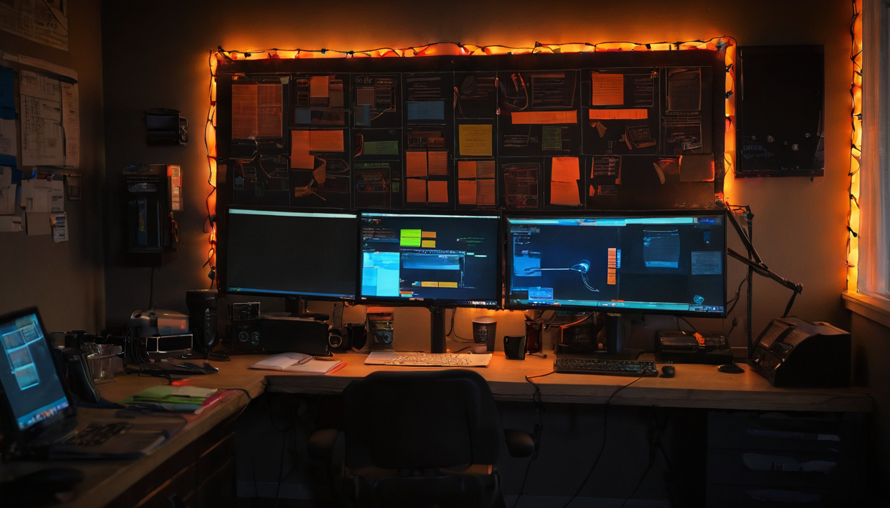
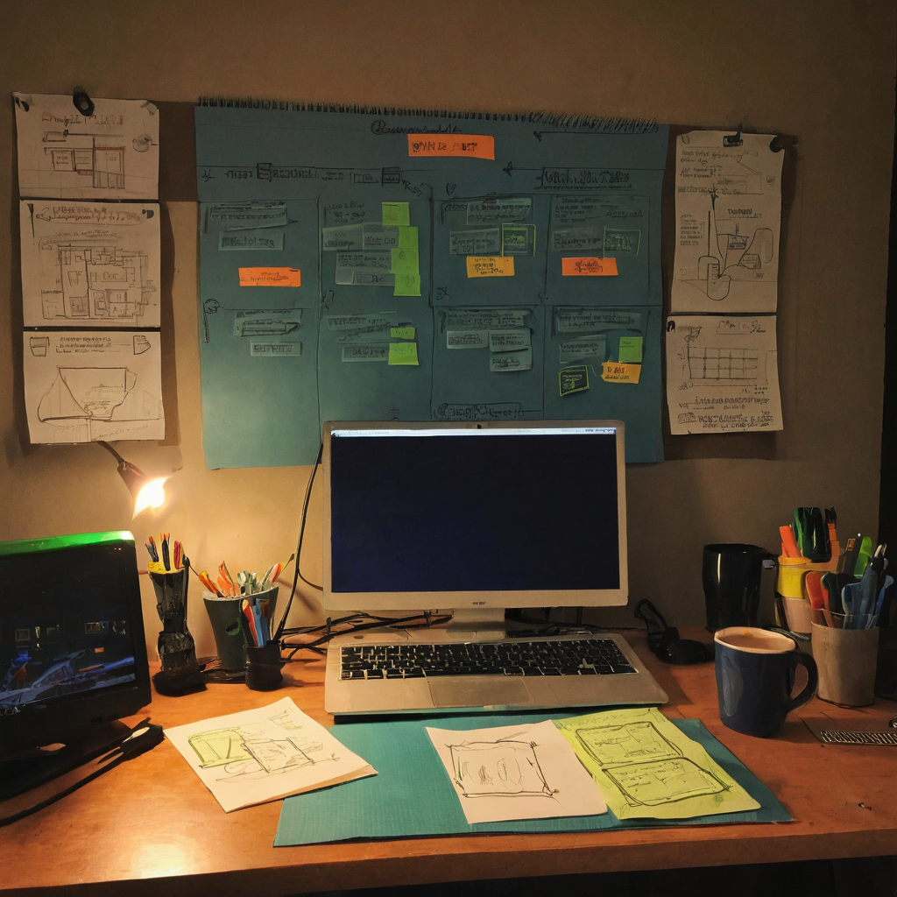

I stopped on this one because it is such a small, ordinary moment that actually shows how a lot of Chia NFT communities function day to day. No launch hype, no countdown clock, just a collection quietly getting added to a Discord's internal shop where people can spend points they already earned.
@bytesandblocks posted that Tiger Blood NFTs, created by @TigerSaintRomeo, were added to the Tang Gang Discord at 69 PP each. PP here reads as the server's internal point currency, the kind community members build up through participation rather than buying outright. The post links out to the collection's page on MintGarden, which is where you can actually see the pieces and the on-chain details.

This is a small thing, but it points at something bigger happening across Chia NFT communities: reward economies built inside Discords. Instead of every collection being a cold mint that anyone with a wallet can grab, some communities are building point systems that reward people for showing up, engaging, and sticking around. Getting your art added to one of these shops is a form of distribution that money alone cannot really buy. It has to be earned into the community first.
For an artist like @TigerSaintRomeo, this is a real distribution channel. For Tang Gang, it is one more reason for members to stay active. For the Chia ecosystem in general, it is another example of NFT collections finding an audience through community infrastructure instead of pure marketplace hype.
What it does: Tang Gang members who have accumulated PP can now redeem those points for a Tiger Blood NFT instead of buying one directly.
Who it helps: The artist gets placed in front of an already engaged community. Community members get a new option for spending points they have earned. Tang Gang gets another reason for people to keep participating.
What problem it solves: Discovery is hard for small NFT artists. Point shops built into active Discords solve a piece of that by putting the work directly in front of people who are already paying attention, without needing an ad budget or a big following.
What still needs work: I do not have details on total supply, rarity, or how the wider Tang Gang point economy works, and the post does not spell that out either. Anyone interested should check the MintGarden page directly before assuming anything about scarcity or value.
What I would test first: If you are part of a community with any kind of point or reputation system, watch how a drop like this performs. Does it get claimed quickly, does it sit, does it change engagement in the server afterward. That tells you more about whether a system like this works than any single collection does.
I like seeing collections move through community point shops instead of straight into a cold mint. It is a good sign for the artist that a community trusted the work enough to put it in front of members as something worth earning. @TigerSaintRomeo gets exposure to people who are already engaged, and Tang Gang gets to keep that engagement flowing. I do not know the mechanics of Tang Gang's point system well enough to say how competitive 69 PP is to earn, but the setup itself is the kind of small community infrastructure that makes Chia NFTs feel less like speculation and more like an actual scene.
Worth keeping an eye on whether Tang Gang keeps rotating new artists through the point shop, and whether other Chia Discords adopt similar systems. If point-based reward shops become a common pattern, that is a healthier distribution model for artists than relying on mint hype alone. Nothing here is guaranteed to grow into anything bigger, but it is a pattern worth watching.
Source: X post by @bytesandblocks, https://x.com/i/web/status/2077857480126747074, retrieved on 2026-07-16.
External references: Tiger Blood collection on MintGarden, https://mintgarden.io/collections/tiger-blood-col1rk4tp390g5fvm6qlwvmwe6h9ccvxndva9t6c3c0ft47c7jl0guqq62786d